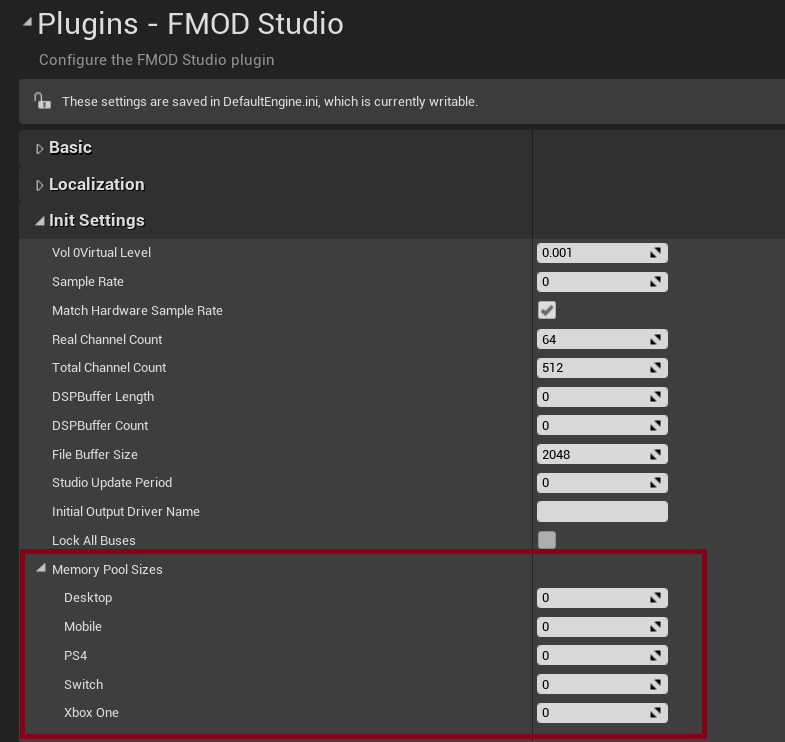
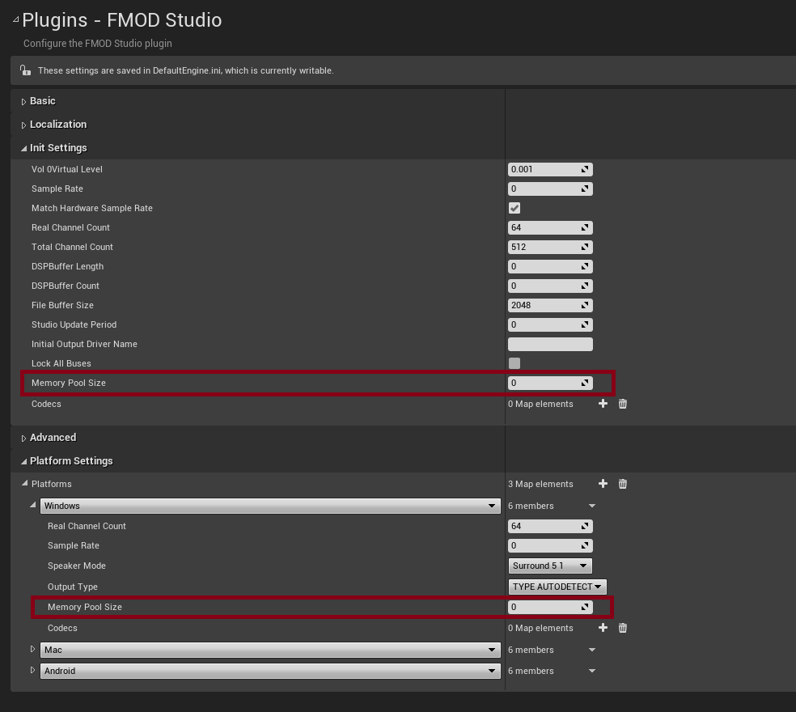

Unreal Integration 2.03
This section describes the major features introduced in the 2.03 release. See the Detailed Revision History for information regarding each patch release.
General runtime features and improvements, including any API changes relevant to scripting are documented in the API what's new page.
This section describes any major changes that occurred in 2.02.xx leading up to the release of 2.03.
Added support for version 4.27, 5.0, 5.1, 5.2, 5.3.
In version 2.02.18 we added support for Niagara, Unreal's next gen VFX System.
Starting from UE5.1, we have added support for AudioLink, which allows the Audio from Unreal to be passed to FMOD.
Some settings that are common among all platforms, and useful to customize, have been separated into specific Platform Settings.
The original platform memory pool settings have been removed in favor of having Separate Platform Settings.
If you were previously using these settings you will need to manually transfer them to the new settings:
| Legacy | New |
|---|---|
|  |  |